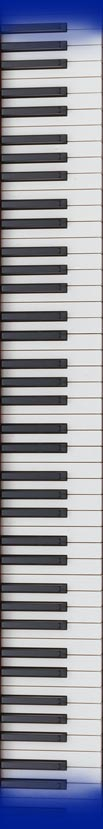
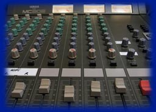

Music Style
What Defines Monolithic
Monolothic's music fits in the synthpop/electronic genre, with underlying dance beats often present. Other genres that find themselves in Monolithic music ranging in prominence from hints to domination of songs are breakbeat, trance, ebm, techno, industrial, and downtempo. Regardless of the quick tempo and driving sounds, Midihead's lyrics express serious themes about relationships, religion, and politics. These themes are complemented with powerful harmonic tones noticeable within the intense beat.
Voice of Midihead
Monolithic's vocals are usually by Midihead or his wife Shauna. All singing in Monolithic is powerful and emotional. Vocals are occasionally modified to sound more deep and resonating with echos and chorus effects. Midihead's voice correlates with the theme and feeling of the lyrics he writes for his songs more than any other sound. Midihead rarely does cover vocals, but he may modify vocals in remixes as well.

Instruments and Sounds
The synthetic sound originates from heavily damaged audio recordings in most if not all of the music, some of which sound acoustic. Synths are often created from distorted everyday sounds such as the spinning of a washing machine or humming of a fridge. Midihead manipulates these sounds using audio damage software. Sounds can also be played back on keyboards.

Drums and Beat
The dance beat present in the majority of Monolithic's music is created through the use of a constant base/kick drum with alternating snare. Drum beats are created in loops using software like Tattoo. Percussion represents the least acoustic sound in Monolithic. This beat contrasts with the themes in the lyrics of the songs, but complements the feeling of the instrumental music.
|
You do not have Adobe Flash player. To view this content, please download it here.
Monolithic's Musical Style
|